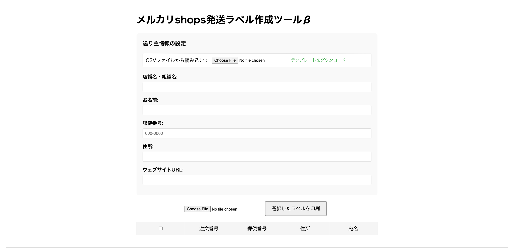

ChatGPTは答えをくれる。AIカテキョは、考え方をくれる。【答えを教えないAI家庭教師】βバージョン公開
生成AIを活用した、「答え」ではなく「考え方」を教えてくれるAI家庭教師サービスの開発背景と思想について。

Amazonの商品ページを開くだけで、メルカリの中古の候補と価格差がその場で分かります。別タブで検索し直す必要はありません。「買う前に中古もチェックしたい」を、ページを離れずに済ませるためのChrome拡張機能です。無料で使えます。
Web上の公開情報から営業リストを自動で収集し、スプレッドシート形式で出力するツール。開発案件向けのデモとして準備中です。
AIがあなたの絵の上手さを判定！出題されるお題に合わせて絵を描き、カメラに映すだけの簡単絵心テスト。TensorFlow.jsを活用したブラウザで動作するゲームアプリ。

メルカリShopsの注文CSVから長形3号封筒用の宛名ラベルを作成するWebアプリケーション。

投資学習とポートフォリオ管理を支援するWebアプリケーション。資産配分、モデリング、目標達成の可視化などを提供。

ハードボイルドな辞表を生成します。

「答え」ではなく「考え方」を教えてくれるAI家庭教師サービス。

自分の知らないレストランと偶然出会えるサービス。
業務の自動化や小さなツールの開発を、副業としてお受けしています。「手作業で繰り返している作業を自動化したい」「公開情報を集めて一覧にしたい」といったご相談に対応します。
ご相談はランサーズのプロフィールから受け付けています。CrowdWorksでも同じアカウント名（miuray）で活動しています。
岡山でWEB・AI関連受託開発やっているエンジニアです。空気を読んでいたらPM・管理職になってしまいました。
仕事の傍ら、TensorFlow.jsを活用したブラウザで動作するAIアプリケーションや、日常の課題を解決する実用的なWebツールの開発に取り組んでいます。
「技術は使ってこそ価値がある」をモットーに、学んだ技術を形にすることを大切にしています。
開発に関する記事や、プロダクトの紹介をnoteで公開しています。
生成AIを活用した、「答え」ではなく「考え方」を教えてくれるAI家庭教師サービスの開発背景と思想について。
日常の小さな悩みを解決するために開発した、ランチ選びを効率化するWebアプリケーションの紹介。